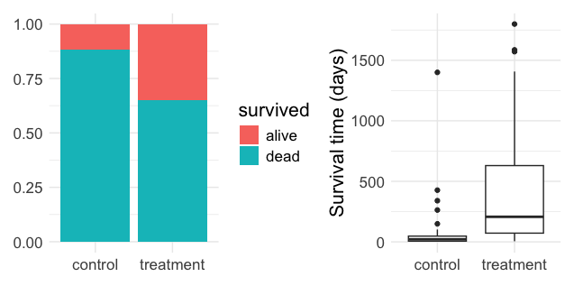
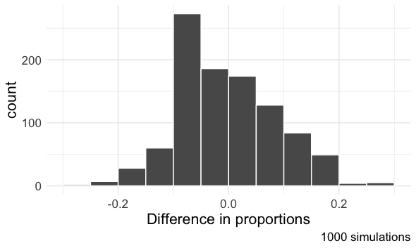
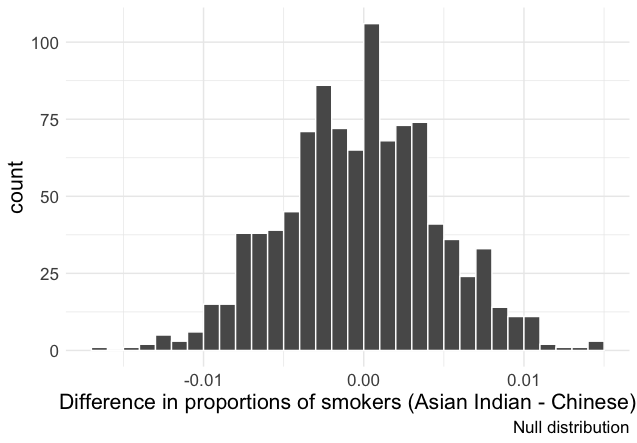
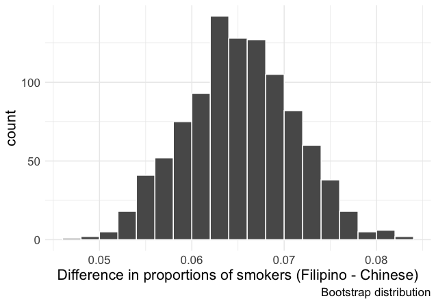

Hypothesis testing with Randomization
The Stanford University Heart Transplant Study was conducted to determine whether an experimental heart transplant program increased lifespan. Each patient entering the program was designated an official heart transplant candidate, meaning that they were gravely ill and would most likely benefit from a new heart. Some patients got a transplant and some did not. The variable
transplantindicates which group the patients were in: treatment (received transplant) or control (no transplant). The variablesurvivedindicates whether the patient was alive at the end of the study or died. Of the 34 patients in the control group, 30 died. Of the 69 people in the treatment group, 45 died.
What do the two plots above suggest about 1) if survival is independent of receiving a transplant and 2) the efficacy of heart transplants? Explain your reasoning.
What proportion of patients in the treatment group and the control group died?
Write out a null and alternative hypothesis for investigating whether there is statistically significant evidence that the treatment is effective.
The paragraph below describes the set up for a randomization test if we did not have access to software. Fill in the blanks with a number or phrase using your answers to (b) and (c) for guidance:
We write the word ______ on _______ cards representing patients who were alive at the end of the study, and ______ on ______ cards representing the patients who were not. Then we shuffle these cards and split them into two groups: one group of size ______ representing treatment, and one group of size ______ representing _________. We calculate the difference between the proportion of ________ cards in the treatment and control groups (treatment - control) and record this value. We repeat this 1000 times to build a distribution centered at _______. This is called the ________ distribution. Lastly, we calculate the proportion of simulations where the simulated difference in proportions are _________. If this proportion is low, we conclude that that it is __________ to have observed our data by chance assuming ___________.
What do the simulation results shown below suggest about the effectiveness of heart transplants?

Suggest a more informative x-axis label for the plot above.
Understanding cultural differences in tobacco use across different demographic groups can lead to improved health care education and treatment. A recent study dis-aggregated tobacco use across Asian American ethnic groups, including Asian-Indian (n = 4373), Chinese (n = 4736), and Filipino (n = 4912), in comparison to non-Hispanic Whites (n = 275025). The number of current smokers in each group at the time of study was reported as:
Asian-Indian: 223
Chinese: 279
Filipino: 609
non-Hispanic Whites: 50880
To determine whether the proportion of Asian-Indian Americans who are current smokers is different from the proportion of Chinese Americans who are smokers, a randomization simulation was performed.
Using both symbols and words, provide the parameter and statistic of interest for this study. Do you know the numerical value of either the parameter or statistic of interest? If so, provide it.
The histogram below provides the simulated null distribution obtained from 1000 repetitions. Estimate the standard error.

Consider the hypothesis test to determine if there is a difference in proportion of Asian-Indian Americans as compared to Chinese Americans who are current smokers. Write out the null and alternative hypotheses, and estimate a p-value using the randomization histogram from (b). If the significance level is \(\alpha = 0.05\), what is your decision and conclusion in the context of the problem?
Now consider the following bootstrap distribution of the difference in sample proportions of current smokers (Filipino Americans minus Chinese Americans) in 1000 repetitions. Find a 95% bootstrap confidence interval for the true difference in the proportion of current smokers in the population. Interpret the interval in the context of the problem, assuming our sample is representative.
